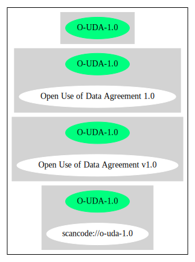

Key |
Value |
|---|---|
Fullname |
Open Use of Data Agreement v1.0 |
Shortname |
O-UDA-1.0 |
Rating |
Unknown, probably Attention or Stop or No-Go |
Classification |
NoCopyleft |
Other Names:
scancode://o-uda-1.0
Homepage: https://github.com/microsoft/Open-Use-of-Data-Agreement/blob/v1.0/O-UDA-1.0.md
SPDX: http://spdx.org/licenses/O-UDA-1.0.json
Open Use of Data Agreement v1.0
This is the Open Use of Data Agreement, Version 1.0 (the "O-UDA"). Capitalized terms are defined in Section 5. Data Provider and you agree as follows:
Provision of the Data
1.1. You may use, modify, and distribute the Data made available to you by the Data Provider under this O-UDA if you follow the O-UDA's terms.
1.2. Data Provider will not sue you or any Downstream Recipient for any claim arising out of the use, modification, or distribution of the Data provided you meet the terms of the O-UDA.
1.3 This O-UDA does not restrict your use, modification, or distribution of any portions of the Data that are in the public domain or that may be used, modified, or distributed under any other legal exception or limitation.
No Restrictions on Use or Results
2.1. The O-UDA does not impose any restriction with respect to:
2.1.1. the use or modification of Data; or
2.1.2. the use, modification, or distribution of Results.
Redistribution of Data
3.1. You may redistribute the Data under terms of your choice, so long as:
3.1.1. You include with any Data you redistribute all credit or attribution information that you received with the Data, and your terms require any Downstream Recipient to do the same; and
3.1.2. Your terms include a warranty disclaimer and limitation of liability for Upstream Data Providers at least as broad as those contained in Section 4.2 and 4.3 of the O-UDA.
No Warranty, Limitation of Liability
4.1. Data Provider does not represent or warrant that it has any rights whatsoever in the Data.
4.2. THE DATA IS PROVIDED ON AN “AS IS” BASIS, WITHOUT WARRANTIES OR CONDITIONS OF ANY KIND, EITHER EXPRESS OR IMPLIED INCLUDING, WITHOUT LIMITATION, ANY WARRANTIES OR CONDITIONS OF TITLE, NON-INFRINGEMENT, MERCHANTABILITY OR FITNESS FOR A PARTICULAR PURPOSE.
4.3. NEITHER DATA PROVIDER NOR ANY UPSTREAM DATA PROVIDER SHALL HAVE ANY LIABILITY FOR ANY DIRECT, INDIRECT, INCIDENTAL, SPECIAL, EXEMPLARY, OR CONSEQUENTIAL DAMAGES (INCLUDING WITHOUT LIMITATION LOST PROFITS), HOWEVER CAUSED AND ON ANY THEORY OF LIABILITY, WHETHER IN CONTRACT, STRICT LIABILITY, OR TORT (INCLUDING NEGLIGENCE OR OTHERWISE) ARISING IN ANY WAY OUT OF THE DATA OR RESULTS, EVEN IF ADVISED OF THE POSSIBILITY OF SUCH DAMAGES.
Definitions
5.1. "Data" means the material you receive under the O-UDA in modified or unmodified form, but not including Results.
5.2. "Data Provider" means the source from which you receive the Data and with whom you enter into the O-UDA.
5.3. "Downstream Recipient" means any person or persons who receives the Data directly or indirectly from you in accordance with the O-UDA.
5.4. "Result" means anything that you develop or improve from your use of Data that does not include more than a de minimis portion of the Data on which the use is based. Results may include de minimis portions of the Data necessary to report on or explain use that has been conducted with the Data, such as figures in scientific papers, but do not include more. Artificial intelligence models trained on Data (and which do not include more than a de minimis portion of Data) are Results.
5.5. "Upstream Data Providers" means the source or sources from which the Data Provider directly or indirectly received, under the terms of the O-UDA, material that is included in the Data.{
"__impliedNames": [
"O-UDA-1.0",
"Open Use of Data Agreement v1.0",
"scancode://o-uda-1.0"
],
"__impliedId": "O-UDA-1.0",
"facts": {
"SPDX": {
"isSPDXLicenseDeprecated": false,
"spdxFullName": "Open Use of Data Agreement v1.0",
"spdxDetailsURL": "http://spdx.org/licenses/O-UDA-1.0.json",
"_sourceURL": "https://spdx.org/licenses/O-UDA-1.0.html",
"spdxLicIsOSIApproved": false,
"spdxSeeAlso": [
"https://github.com/microsoft/Open-Use-of-Data-Agreement/blob/v1.0/O-UDA-1.0.md"
],
"_implications": {
"__impliedNames": [
"O-UDA-1.0",
"Open Use of Data Agreement v1.0"
],
"__impliedId": "O-UDA-1.0",
"__isOsiApproved": false,
"__impliedURLs": [
[
"SPDX",
"http://spdx.org/licenses/O-UDA-1.0.json"
],
[
null,
"https://github.com/microsoft/Open-Use-of-Data-Agreement/blob/v1.0/O-UDA-1.0.md"
]
]
},
"spdxLicenseId": "O-UDA-1.0"
},
"Scancode": {
"otherUrls": null,
"homepageUrl": "https://github.com/microsoft/Open-Use-of-Data-Agreement/blob/v1.0/O-UDA-1.0.md",
"shortName": "O-UDA-1.0",
"textUrls": null,
"text": "Open Use of Data Agreement v1.0\nThis is the Open Use of Data Agreement, Version 1.0 (the \"O-UDA\"). Capitalized terms are defined in Section 5. Data Provider and you agree as follows:\n\nProvision of the Data\n\n1.1. You may use, modify, and distribute the Data made available to you by the Data Provider under this O-UDA if you follow the O-UDA's terms.\n\n1.2. Data Provider will not sue you or any Downstream Recipient for any claim arising out of the use, modification, or distribution of the Data provided you meet the terms of the O-UDA.\n\n1.3 This O-UDA does not restrict your use, modification, or distribution of any portions of the Data that are in the public domain or that may be used, modified, or distributed under any other legal exception or limitation.\n\nNo Restrictions on Use or Results\n\n2.1. The O-UDA does not impose any restriction with respect to:\n\n2.1.1. the use or modification of Data; or\n\n2.1.2. the use, modification, or distribution of Results.\n\nRedistribution of Data\n\n3.1. You may redistribute the Data under terms of your choice, so long as:\n\n3.1.1. You include with any Data you redistribute all credit or attribution information that you received with the Data, and your terms require any Downstream Recipient to do the same; and\n\n3.1.2. Your terms include a warranty disclaimer and limitation of liability for Upstream Data Providers at least as broad as those contained in Section 4.2 and 4.3 of the O-UDA.\n\nNo Warranty, Limitation of Liability\n\n4.1. Data Provider does not represent or warrant that it has any rights whatsoever in the Data.\n\n4.2. THE DATA IS PROVIDED ON AN âÂÂAS ISâ BASIS, WITHOUT WARRANTIES OR CONDITIONS OF ANY KIND, EITHER EXPRESS OR IMPLIED INCLUDING, WITHOUT LIMITATION, ANY WARRANTIES OR CONDITIONS OF TITLE, NON-INFRINGEMENT, MERCHANTABILITY OR FITNESS FOR A PARTICULAR PURPOSE.\n\n4.3. NEITHER DATA PROVIDER NOR ANY UPSTREAM DATA PROVIDER SHALL HAVE ANY LIABILITY FOR ANY DIRECT, INDIRECT, INCIDENTAL, SPECIAL, EXEMPLARY, OR CONSEQUENTIAL DAMAGES (INCLUDING WITHOUT LIMITATION LOST PROFITS), HOWEVER CAUSED AND ON ANY THEORY OF LIABILITY, WHETHER IN CONTRACT, STRICT LIABILITY, OR TORT (INCLUDING NEGLIGENCE OR OTHERWISE) ARISING IN ANY WAY OUT OF THE DATA OR RESULTS, EVEN IF ADVISED OF THE POSSIBILITY OF SUCH DAMAGES.\n\nDefinitions\n\n5.1. \"Data\" means the material you receive under the O-UDA in modified or unmodified form, but not including Results.\n\n5.2. \"Data Provider\" means the source from which you receive the Data and with whom you enter into the O-UDA.\n\n5.3. \"Downstream Recipient\" means any person or persons who receives the Data directly or indirectly from you in accordance with the O-UDA.\n\n5.4. \"Result\" means anything that you develop or improve from your use of Data that does not include more than a de minimis portion of the Data on which the use is based. Results may include de minimis portions of the Data necessary to report on or explain use that has been conducted with the Data, such as figures in scientific papers, but do not include more. Artificial intelligence models trained on Data (and which do not include more than a de minimis portion of Data) are Results.\n\n5.5. \"Upstream Data Providers\" means the source or sources from which the Data Provider directly or indirectly received, under the terms of the O-UDA, material that is included in the Data.",
"category": "Permissive",
"osiUrl": null,
"owner": "Microsoft",
"_sourceURL": "https://github.com/nexB/scancode-toolkit/blob/develop/src/licensedcode/data/licenses/o-uda-1.0.yml",
"key": "o-uda-1.0",
"name": "Open Use of Data Agreement v1.0",
"spdxId": "O-UDA-1.0",
"notes": null,
"_implications": {
"__impliedNames": [
"scancode://o-uda-1.0",
"O-UDA-1.0",
"O-UDA-1.0"
],
"__impliedId": "O-UDA-1.0",
"__impliedCopyleft": [
[
"Scancode",
"NoCopyleft"
]
],
"__calculatedCopyleft": "NoCopyleft",
"__impliedText": "Open Use of Data Agreement v1.0\nThis is the Open Use of Data Agreement, Version 1.0 (the \"O-UDA\"). Capitalized terms are defined in Section 5. Data Provider and you agree as follows:\n\nProvision of the Data\n\n1.1. You may use, modify, and distribute the Data made available to you by the Data Provider under this O-UDA if you follow the O-UDA's terms.\n\n1.2. Data Provider will not sue you or any Downstream Recipient for any claim arising out of the use, modification, or distribution of the Data provided you meet the terms of the O-UDA.\n\n1.3 This O-UDA does not restrict your use, modification, or distribution of any portions of the Data that are in the public domain or that may be used, modified, or distributed under any other legal exception or limitation.\n\nNo Restrictions on Use or Results\n\n2.1. The O-UDA does not impose any restriction with respect to:\n\n2.1.1. the use or modification of Data; or\n\n2.1.2. the use, modification, or distribution of Results.\n\nRedistribution of Data\n\n3.1. You may redistribute the Data under terms of your choice, so long as:\n\n3.1.1. You include with any Data you redistribute all credit or attribution information that you received with the Data, and your terms require any Downstream Recipient to do the same; and\n\n3.1.2. Your terms include a warranty disclaimer and limitation of liability for Upstream Data Providers at least as broad as those contained in Section 4.2 and 4.3 of the O-UDA.\n\nNo Warranty, Limitation of Liability\n\n4.1. Data Provider does not represent or warrant that it has any rights whatsoever in the Data.\n\n4.2. THE DATA IS PROVIDED ON AN âAS ISâ BASIS, WITHOUT WARRANTIES OR CONDITIONS OF ANY KIND, EITHER EXPRESS OR IMPLIED INCLUDING, WITHOUT LIMITATION, ANY WARRANTIES OR CONDITIONS OF TITLE, NON-INFRINGEMENT, MERCHANTABILITY OR FITNESS FOR A PARTICULAR PURPOSE.\n\n4.3. NEITHER DATA PROVIDER NOR ANY UPSTREAM DATA PROVIDER SHALL HAVE ANY LIABILITY FOR ANY DIRECT, INDIRECT, INCIDENTAL, SPECIAL, EXEMPLARY, OR CONSEQUENTIAL DAMAGES (INCLUDING WITHOUT LIMITATION LOST PROFITS), HOWEVER CAUSED AND ON ANY THEORY OF LIABILITY, WHETHER IN CONTRACT, STRICT LIABILITY, OR TORT (INCLUDING NEGLIGENCE OR OTHERWISE) ARISING IN ANY WAY OUT OF THE DATA OR RESULTS, EVEN IF ADVISED OF THE POSSIBILITY OF SUCH DAMAGES.\n\nDefinitions\n\n5.1. \"Data\" means the material you receive under the O-UDA in modified or unmodified form, but not including Results.\n\n5.2. \"Data Provider\" means the source from which you receive the Data and with whom you enter into the O-UDA.\n\n5.3. \"Downstream Recipient\" means any person or persons who receives the Data directly or indirectly from you in accordance with the O-UDA.\n\n5.4. \"Result\" means anything that you develop or improve from your use of Data that does not include more than a de minimis portion of the Data on which the use is based. Results may include de minimis portions of the Data necessary to report on or explain use that has been conducted with the Data, such as figures in scientific papers, but do not include more. Artificial intelligence models trained on Data (and which do not include more than a de minimis portion of Data) are Results.\n\n5.5. \"Upstream Data Providers\" means the source or sources from which the Data Provider directly or indirectly received, under the terms of the O-UDA, material that is included in the Data.",
"__impliedURLs": [
[
"Homepage",
"https://github.com/microsoft/Open-Use-of-Data-Agreement/blob/v1.0/O-UDA-1.0.md"
]
]
}
}
},
"__impliedCopyleft": [
[
"Scancode",
"NoCopyleft"
]
],
"__calculatedCopyleft": "NoCopyleft",
"__isOsiApproved": false,
"__impliedText": "Open Use of Data Agreement v1.0\nThis is the Open Use of Data Agreement, Version 1.0 (the \"O-UDA\"). Capitalized terms are defined in Section 5. Data Provider and you agree as follows:\n\nProvision of the Data\n\n1.1. You may use, modify, and distribute the Data made available to you by the Data Provider under this O-UDA if you follow the O-UDA's terms.\n\n1.2. Data Provider will not sue you or any Downstream Recipient for any claim arising out of the use, modification, or distribution of the Data provided you meet the terms of the O-UDA.\n\n1.3 This O-UDA does not restrict your use, modification, or distribution of any portions of the Data that are in the public domain or that may be used, modified, or distributed under any other legal exception or limitation.\n\nNo Restrictions on Use or Results\n\n2.1. The O-UDA does not impose any restriction with respect to:\n\n2.1.1. the use or modification of Data; or\n\n2.1.2. the use, modification, or distribution of Results.\n\nRedistribution of Data\n\n3.1. You may redistribute the Data under terms of your choice, so long as:\n\n3.1.1. You include with any Data you redistribute all credit or attribution information that you received with the Data, and your terms require any Downstream Recipient to do the same; and\n\n3.1.2. Your terms include a warranty disclaimer and limitation of liability for Upstream Data Providers at least as broad as those contained in Section 4.2 and 4.3 of the O-UDA.\n\nNo Warranty, Limitation of Liability\n\n4.1. Data Provider does not represent or warrant that it has any rights whatsoever in the Data.\n\n4.2. THE DATA IS PROVIDED ON AN âAS ISâ BASIS, WITHOUT WARRANTIES OR CONDITIONS OF ANY KIND, EITHER EXPRESS OR IMPLIED INCLUDING, WITHOUT LIMITATION, ANY WARRANTIES OR CONDITIONS OF TITLE, NON-INFRINGEMENT, MERCHANTABILITY OR FITNESS FOR A PARTICULAR PURPOSE.\n\n4.3. NEITHER DATA PROVIDER NOR ANY UPSTREAM DATA PROVIDER SHALL HAVE ANY LIABILITY FOR ANY DIRECT, INDIRECT, INCIDENTAL, SPECIAL, EXEMPLARY, OR CONSEQUENTIAL DAMAGES (INCLUDING WITHOUT LIMITATION LOST PROFITS), HOWEVER CAUSED AND ON ANY THEORY OF LIABILITY, WHETHER IN CONTRACT, STRICT LIABILITY, OR TORT (INCLUDING NEGLIGENCE OR OTHERWISE) ARISING IN ANY WAY OUT OF THE DATA OR RESULTS, EVEN IF ADVISED OF THE POSSIBILITY OF SUCH DAMAGES.\n\nDefinitions\n\n5.1. \"Data\" means the material you receive under the O-UDA in modified or unmodified form, but not including Results.\n\n5.2. \"Data Provider\" means the source from which you receive the Data and with whom you enter into the O-UDA.\n\n5.3. \"Downstream Recipient\" means any person or persons who receives the Data directly or indirectly from you in accordance with the O-UDA.\n\n5.4. \"Result\" means anything that you develop or improve from your use of Data that does not include more than a de minimis portion of the Data on which the use is based. Results may include de minimis portions of the Data necessary to report on or explain use that has been conducted with the Data, such as figures in scientific papers, but do not include more. Artificial intelligence models trained on Data (and which do not include more than a de minimis portion of Data) are Results.\n\n5.5. \"Upstream Data Providers\" means the source or sources from which the Data Provider directly or indirectly received, under the terms of the O-UDA, material that is included in the Data.",
"__impliedURLs": [
[
"SPDX",
"http://spdx.org/licenses/O-UDA-1.0.json"
],
[
null,
"https://github.com/microsoft/Open-Use-of-Data-Agreement/blob/v1.0/O-UDA-1.0.md"
],
[
"Homepage",
"https://github.com/microsoft/Open-Use-of-Data-Agreement/blob/v1.0/O-UDA-1.0.md"
]
]
}